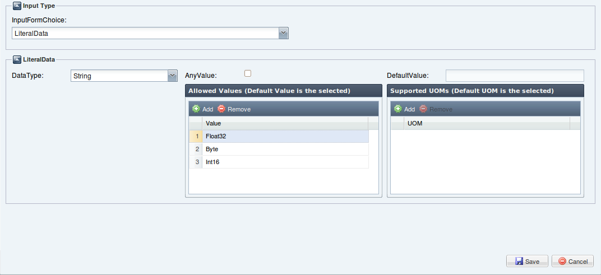
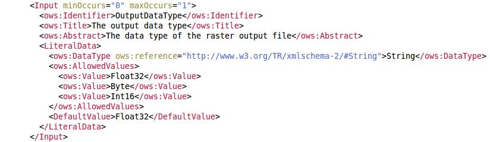

Indicates that this input shall be a simple literal value (such as an integer) that is embedded in the execute request, and describes the possible values.
The Literal Data Input in the wizard can be defined by the following interface:

DataType: on the left of the form you can choose the DataType of this input(short,int,double,String,float,boolean,long,byte).
AnyValue/DefaultValue: at the click of the checkbox AnyValue, the grid immediately below(Allowed Values Grid) is disabled and the textfield DefaultValue enabled(Default value of this input, encoded in character string). AnyValue indicates that any value is allowed for this input.
AllowedValues: if a finite set of allowed values are chosen for this input, we must add the elements on the grid clicking the Add button. AllowedValues indicates that there is a finite set of values and ranges allowed for this input, and contains ordered list off all valid values.
UOMs: in the same way, add the unit of measure in the Supported UOMs grid. The default UOM is the item selected. UOMs is a list of units of measure supported for this numerical input(or output). For both grids, if an element must be removed just click the button Remove.
The result we get (in WPS Current Process Description text area) to click the Save button is shown in the following:
